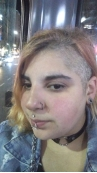

Desarrolladora

Este sitio web ha sido desarrollado en el 2024 por la alumna Agostina Santoliquido en el marco de la materia Informática General I (Turno Noche) de la carrera de Artes Multimediales de la Universidad Nacional de las Artes (UNA).